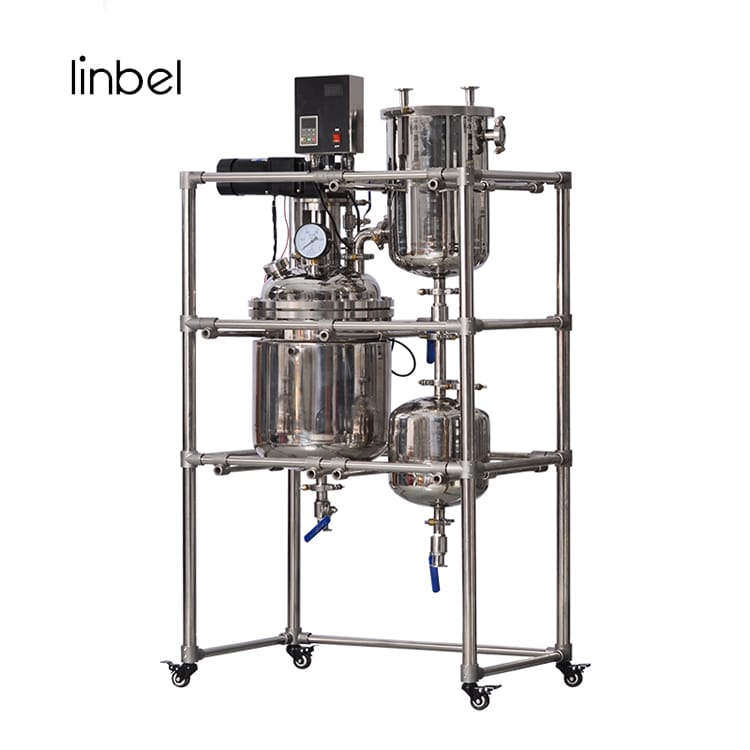

Two process-level advantages run through our entire portfolio, before any formulation know-how is even applied: continuous-flow reactor manufacturing, and room-temperature aqueous synthesis.

Most commodity-grade specialty chemicals are still produced in large batch kettles, where residence time, mixing intensity, and local concentration gradients vary from the top of the vessel to the bottom — and from one batch to the next. That variability shows up downstream as inconsistent particle size, unpredictable crystal habit, and lot-to-lot performance drift.
Our partner manufacturers instead run continuous-flow reactor systems, where reagents are metered precisely and react under tightly controlled, constant conditions as they move through the reactor. The result:
Many specialty inorganic materials can be synthesized via high-temperature calcination or organic-solvent-based routes — both of which carry meaningful energy and environmental cost. Wherever the chemistry allows, our sourced materials are instead crystallized at ambient temperature in water-based reaction systems.
Process discipline gets us a clean, consistent base material. What turns that base material into a premium, differentiated compound is proprietary formulation know-how — the part that cannot be reverse-engineered from a spec sheet.
Our three-tier flame-retardant architecture (LDH + APP + ZnO) is only effective at specific relative ratios — determined through iterative internal testing, not published in any open literature.
Silane, stearate, and proprietary dispersant coatings are applied to each particle surface to control polymer compatibility, moisture sensitivity, and dispersion behavior.
Converting a dry nanopowder into a permanently stable, high-solids aqueous dispersion requires precise control of pH, ionic strength, and dispersant chemistry — a distinct discipline from the base synthesis itself.
Simply mixing hydrotalcite, ammonium polyphosphate, and zinc oxide in a beaker will not reproduce our flame-retardant platform's performance. The measurable quality gap comes from ratio optimization, surface compatibilization, and process sequencing developed and validated over many formulation cycles.
Process discipline and formulation know-how are only valuable if they are verifiable. Every production lot passes through analytical confirmation before it reaches a customer.
Laser diffraction and dynamic light scattering confirm target D50 and span values on every lot, including the 29 nm / span 0.9 hydrotalcite specification.
Inductively coupled plasma spectroscopy verifies low heavy-metal content on every production batch — critical for regulated end-use markets.
Limiting oxygen index (LOI), UL-94, and cone calorimetry data validate real-world flame-retardant performance in target polymer systems.
Haze and transmittance testing on cast films confirms optical clarity retention claims before any lot is released for shipment.